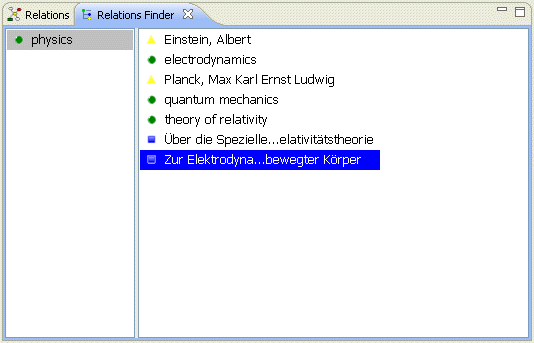
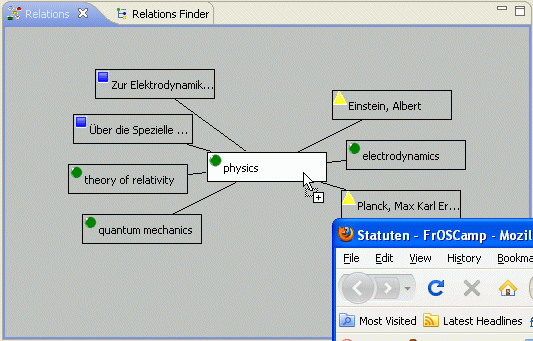

Alternative Relations browser |
The Relations application provides an altenative Relations browser that displays the central item and its relations in a finder style manner.  |
Drag&Drop of Files and Web pages |
The Relations application hooks into the semantic web. You can drag and drop web pages from your web browser onto an item in the Relations browser. The application, then, extracts the metadata contained in the web page and creates a new item that is related to the drop target. If the dropped web page contains bibliographical information, you have the possibility to create a text item with the metadata neatly assigned.  Moreover, you can drop files from your computer's file system too. The application extracts the file's metadata to create an item initalized with meaningful information. |